Surface Urban Heat Island in Lagos State, Nigeria
Spatial pattern, population exposure and change from Landsat, 2000–2025
Abstract
Most of Lagos's built-up mainland is several degrees warmer than the surrounding countryside, and most of its people live there. Between 2000 and 2025, the clear satellite images show no change in the heat island of the inner city that can be told apart from chance. The largest rise, in Ikorodu on the city's edge, is not conclusive either.
- —%Share of Lagos residents who live where the ground is at least 4 °C warmer than the countryside on clear dry-season mornings, 2020–2025.
- — °CChange in the heat island, the city's warmth above the countryside, from 2000–2012 to 2020–2025 in the — inner LGAs seen clearly in every period. The 95% interval, — °C, includes zero.
- — °CRise of the heat island in Ikorodu, the largest of any LGA (95% interval — °C), found in both records but not robust to testing many LGAs or to the change of satellite.
These are ground-surface temperatures on clear mornings, not the air temperature people feel.
1Introduction
Roads, roofs and paving absorb more sunlight and hold more heat than vegetation does, so cities run warmer than the land around them (Oke, 1982). Satellites measure the temperature of the ground surface across a whole city at once, and have done so since the 1980s (Voogt & Oke, 2003).
Earlier studies found Lagos's surface getting hotter as vegetation was lost (Obiefuna et al., 2021; Guo et al., 2022). This study asks three things at the level of the local government areas (LGAs) that run the city: where is it hottest today, what goes with the heat, and how has the pattern changed?
2Study area
Lagos State lies on the coast of south-west Nigeria, between the Atlantic and the Lagos Lagoon. Its — LGAs range from dense inner-city areas such as Ajeromi/Ifelodun, — km² of land, to large and partly rural Epe, — km². Built-up land fills the mainland west of the lagoon; tree cover, wetland and mangrove dominate the east (Figures 1 and 2).
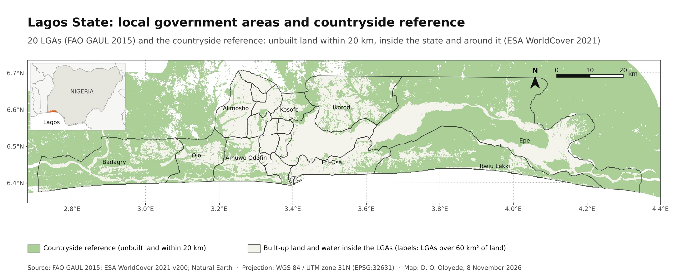
3Data and methods
| What | Source | Years |
|---|---|---|
| Surface temperature, vegetation (NDVI) and built-up index (NDBI), 60 m maps | Landsat 7, 8 and 9 Collection 2 Level 2, every clear dry-season pass (Microsoft Planetary Computer) | 2000–2025 |
| Heat island per LGA per pass | Landsat 7, 8 and 9 (Google Earth Engine) | 2000–2025 |
| Land cover and countryside reference | ESA WorldCover v200, 10 m | 2021 |
| Population | WorldPop, 100 m (modelled) | 2020 |
| LGA averages: temperature, vegetation, MODIS check | Landsat 8 and 9, Sentinel-2, MODIS Terra (Google Earth Engine) | 2022–2024 |
| Built-up land over time | EU Global Human Settlement Layer | 2005–2020 |
All values are from the dry season (December to March), when skies are clearest. The heat island is how much warmer the ground is than nearby countryside, measured on the same satellite morning so the day's weather cancels out:
Each map cell (60 m) takes the median of H over the clear passes in a period: — passes in 2000–2012 (Landsat 7), — in 2013–2019 (Landsat 8) and — in 2020–2025 (Landsat 8 and 9). Cloud, cloud shadow and pixels with more than 4 K temperature uncertainty are masked; a pass is dropped when part of the built-up city reads much colder than the countryside, a sign of cloud or haze the mask missed. Land cover comes from ESA WorldCover 2021, whose overall accuracy for Africa is —% (Zanaga et al., 2022) (Figure 2).
The maps take every pass in which part of Lagos is clear. The LGA change statistics in Sections 4.6 and 4.7 come from a separate, stricter per-LGA record built earlier (Google Earth Engine, countryside from GHSL), with fewer passes; Section 4.8 compares the two. Both use the same Landsat temperature product, so the comparison checks the processing, not the satellite measurement. Full method and code: repository.

4Results
4.1Land surface temperature
On clear dry-season mornings the ground is hottest across the built-up mainland, from Alimosho and Ikeja south to Apapa, and in Ikorodu; it is coolest under the forest and wetland of the east (Figure 3). Averaged by LGA in the Earth Engine record (dry seasons 2022/23 and 2023/24), surface temperature runs from — °C in — to — °C in —.
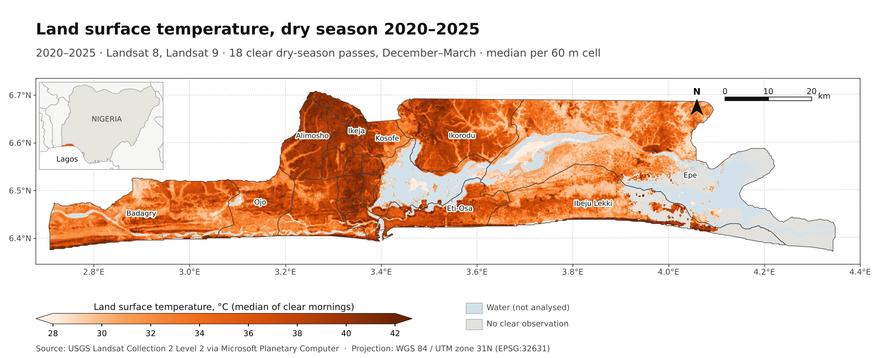
4.2Heat island
Measured against the countryside on the same morning, most of the built-up mainland is more than 4 °C warmer, and parts of the inner city more than 8 °C (Figure 4). Bright beach sand along the coast also reads warm; that is not urban heat. Vegetated land in Badagry, Epe and Ibeju Lekki is as cool as the countryside or cooler.
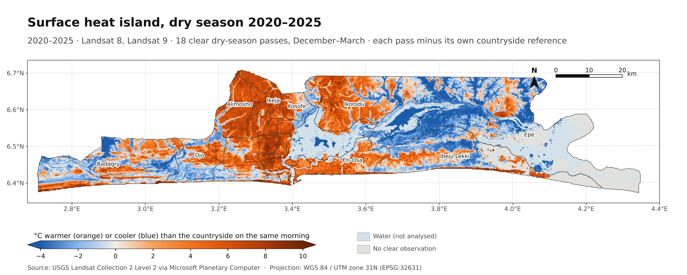
4.3Vegetation and built-up land
Where vegetation is sparse the ground is hot, and where it is dense the ground is cool (Figures 5 to 7). Across cells, the greener the ground the cooler it is (rank correlation —): —% of cells are in both the least green and the hottest third, and —% in both the greenest and the coolest. Vegetation and built-up land are near opposites here, so the maps cannot say how much of the cooling comes from trees and how much from the absence of buildings. The correlation is also partly built in: the countryside reference is itself vegetated land, and vegetation and temperature come from the same images.
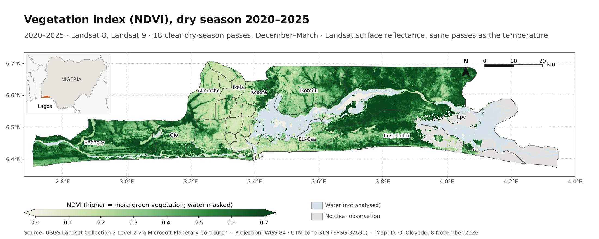
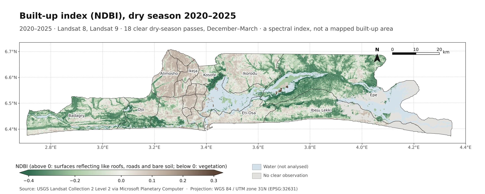
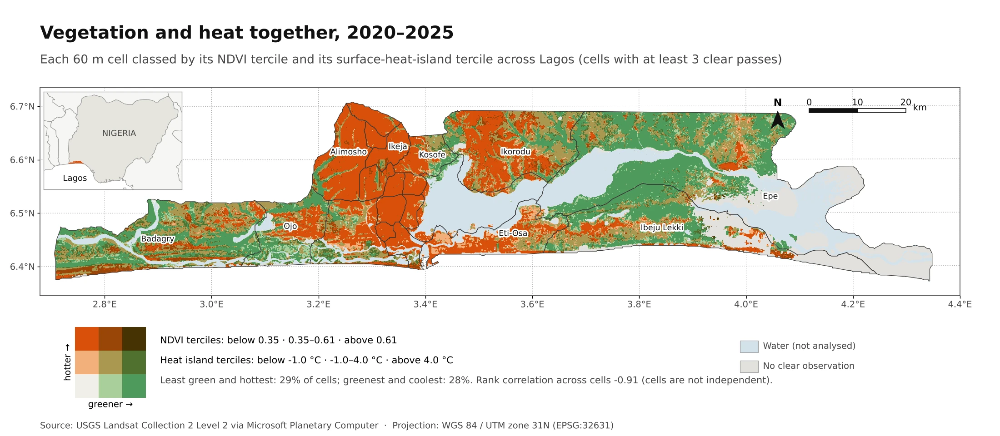
4.4Hot spots
On a 1 km grid, a hot-spot test (Getis & Ord, 1992) finds — hot-spot cells covering the mainland core, Ikorodu and the Lekki corridor, and — cold-spot cells, mostly in the vegetated east and along the lagoon edges of Badagry and Ojo, after correcting for testing — cells at once (Benjamini & Hochberg, 1995) (Figure 8). Hot and cold are relative to the Lagos average, not to the countryside. Neighbouring cells are not independent, so the cell-level significance is optimistic; read the map as a pattern.
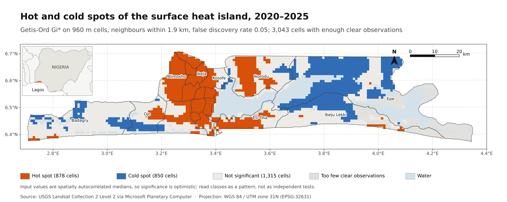
4.5Population exposure
The hottest ground is also where most people live (Figure 9). Of — million modelled residents, —% live in cells at least 4 °C warmer than the countryside; people in cells without enough clear passes are counted in the total but not as exposed. In Mushin, Ajeromi/Ifelodun, Agege and Surulere nearly everyone does; in Epe and Badagry most people live on cooler ground (Figure 10). This shows where heat and people coincide, not a measure of health risk. WorldPop is a model that spreads people across 100 m cells, including some onto vegetated land, so LGA shares are approximate.

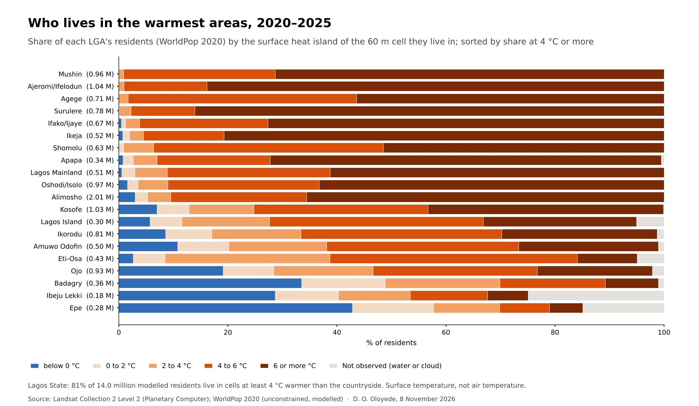
4.6Change, 2000–2025
Across the — inner LGAs seen clearly in every period (—% of the land), the heat island changed by — °C between 2000–2012 and 2020–2025, with a 95% interval of — °C (Figure 11): no change that can be told apart from chance. The maps show where change may lie (Figures 12 and 13): the heat island grew on the edges of the city, in Ikorodu, western Alimosho and the Lekki corridor, places where vegetation declined (Figure 14), while the inner core and much of the west read slightly cooler. Vegetation index rose across most vegetated land, which is likely in part a difference between the Landsat 7 and Landsat 8 sensors; the areas of decline stand out against that. Each period is a different satellite, and the 2000–2012 maps carry stripes from the Landsat 7 scan-line fault, so pixel changes of a degree or two are within the noise.
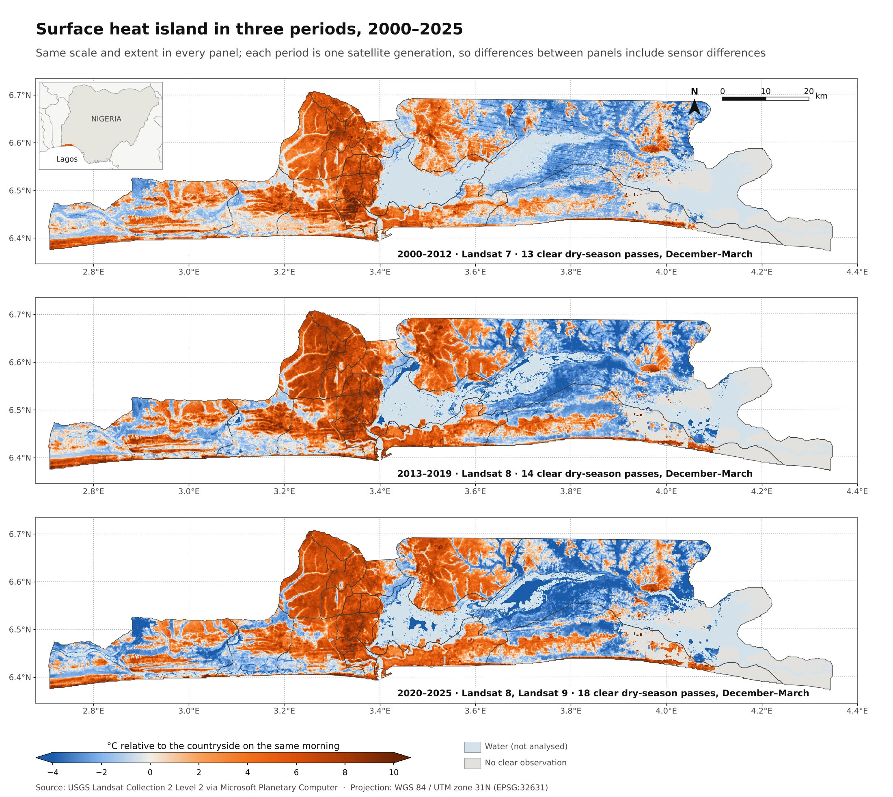
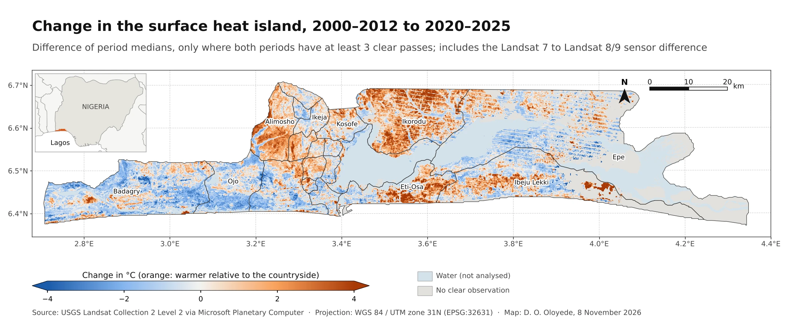
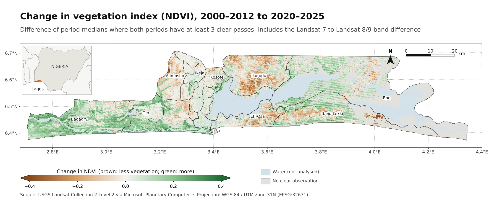
4.7Change in single LGAs
Of the — LGAs with enough clear passes to test, only — shows a rise whose 95% interval excludes zero (Figure 15), and the map record gives the same value. With — LGAs tested, one such result is about what chance alone would give, its trend across seasons is not significant after correcting for multiple tests, and the interval does not include the uncertainty from the change of satellite. — LGAs had too few clear passes to test at all.
4.8How far the data can be trusted
Clear mornings are scarce, and Landsat 7's scan-line fault leaves stripes after 2003, so some cells rest on few passes (Figure 16); the spread across passes is largest at the city's edges and the coast (Figure 17). Two checks. First, the per-LGA heat island from the maps ranks the LGAs like the Earth Engine record (rank correlation — over — LGA-period values; the maps read — °C lower on average). For change, the agreement is weaker: rank correlation —, same direction in — of — LGAs. Second, in the seasons when Landsat 7 and 8 both passed, Landsat 7 read the heat island — °C stronger (95% interval — °C, — LGA-season pairs). That interval includes zero and rests on five seasons, so the sensor difference is not resolved: the change from the first period could be understated or overstated by a degree or more.
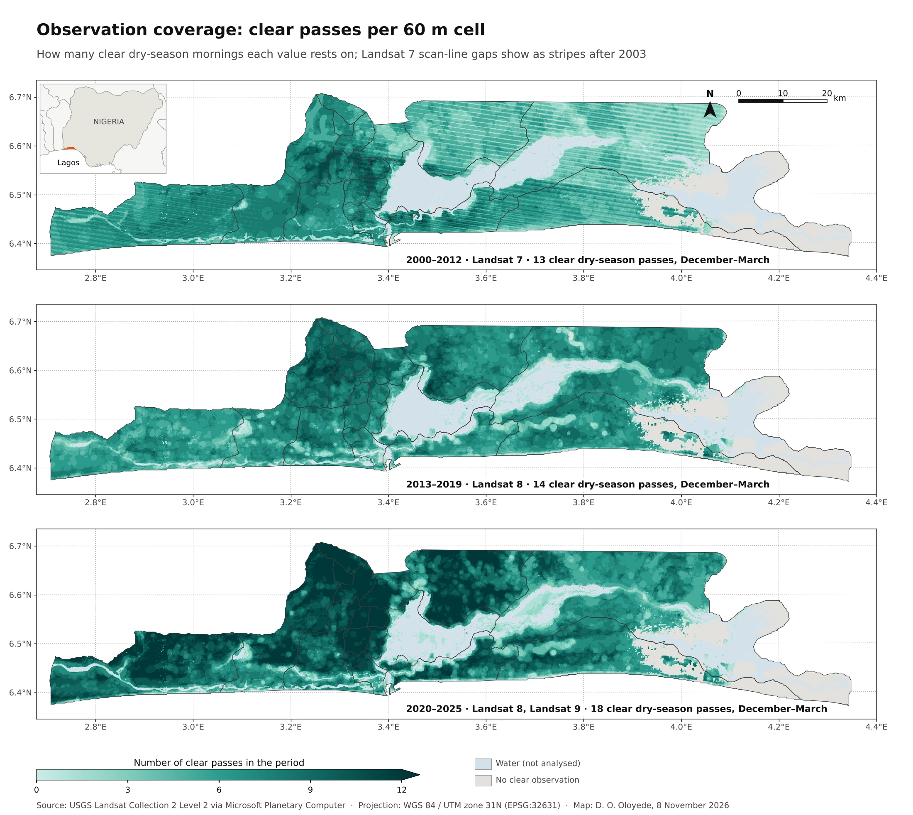
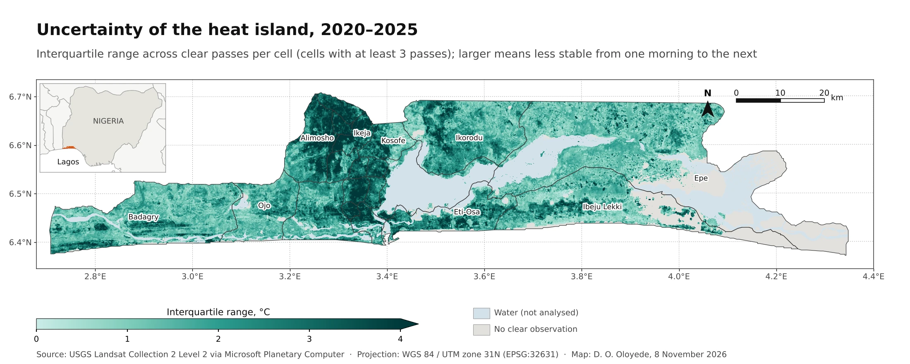
4.9Green space and low ground
Walking distance to green space. Figure 18 maps the straight-line distance from each 60 m cell to the nearest vegetated cell, where vegetation means a dry-season median NDVI of at least —. Taking — m as a rough five-minute walk, —% of the 2020 WorldPop population lives farther than that from vegetation. The share moves from —% to —% when the NDVI cut-off is set to 0.3 or 0.5, so the result depends strongly on the threshold. It also ignores roads, fences and whether a green space can be entered.
Low ground. Figure 19 marks cells below — m of elevation, using the Copernicus DEM GLO-30. Those cells cover —% of the study area and hold —% of the 2020 population. This is an elevation proxy for flood-prone ground, not a flood map. The DEM is a surface model, so buildings and trees are included in the heights, and drainage, rainfall and flood records are not used.
Heat on low ground. Figure 20 shows surface heat on the low cells only. Their cell median is — °C against the higher ground. Neighbouring cells are not independent, so no interval is given and the contrast is descriptive. Low ground also mixes elevation with land cover, which this analysis does not separate, so the contrast is not the effect of elevation alone.
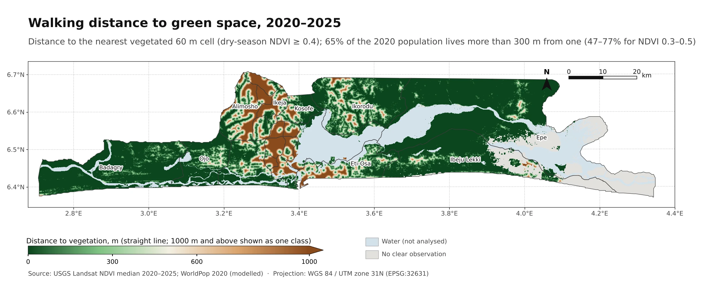
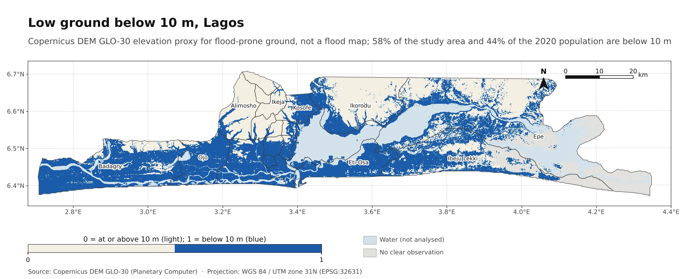
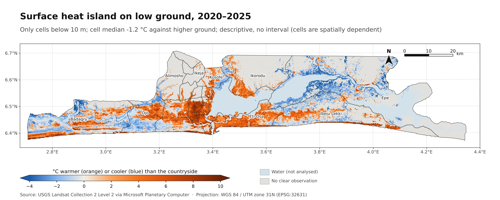
4.10Who lives far from green space, and where the heat is
Figure 21 combines the two. Of the 2020 population, —% (— million people) lives more than 300 m from vegetation and on a cell at least 4 °C warmer than the countryside. Within 300 m of vegetation, —% of residents are on such cells; beyond 300 m, —%. The population-weighted mean heat island is — °C within 300 m and — °C beyond. Most people beyond 300 m live on built-up cells, so this gap largely reflects the built-up effect in Figure 22 rather than a separate effect of distance. The 4 °C cut-off is a choice: at 2 °C, —% of residents with a heat value are on hot cells; at 5 °C, —%.
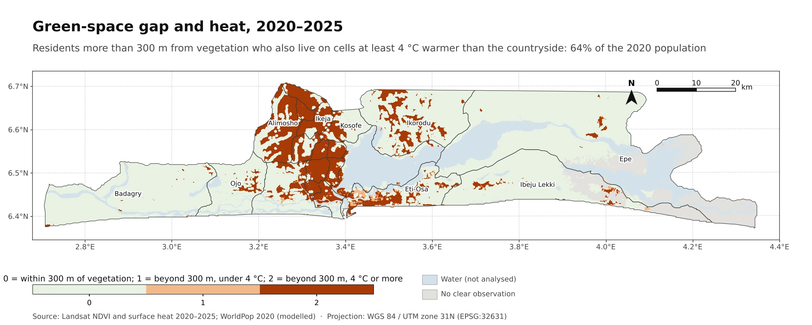
4.11Heat by land cover and by distance
Figure 22 gives the median heat island of each cell by ESA WorldCover 2021 class. Built-up cells, where —% of residents live, have a median of — °C; tree-covered cells, where —% of residents live, have a median of — °C. These are associations between a land-cover label and surface temperature, not measured causes.
Figure 23 bins cells by distance to the nearest vegetated cell. The population-weighted heat island rises in every distance band, from the nearest band to the farthest. —% of residents live more than 600 m from vegetated land. The bands are straight-line distances, not walking routes.
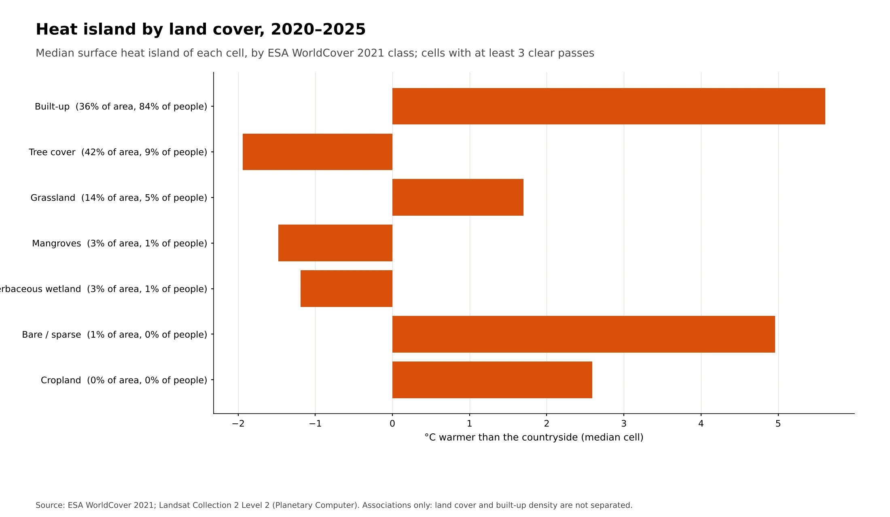
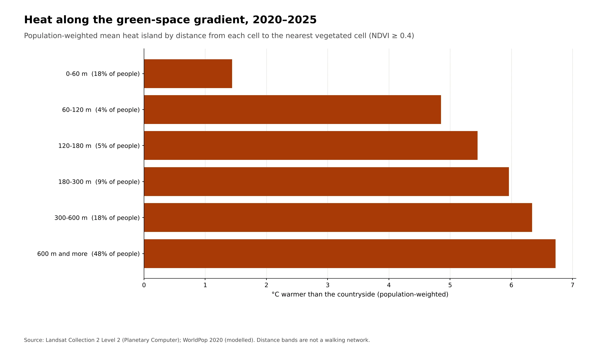
4.12Green-space access and heat by LGA
Figures 24 and 25 give one value per LGA. The share of residents more than 300 m from vegetation is highest in — (—%). Read the two maps together: an LGA average hides the variation inside each LGA.
Figures 26 and 27 repeat the distance map with the vegetation cut-off at 0.3 and 0.5. The share beyond 300 m moves from —% to —% across that range, against —% at 0.4 (Figure 18).
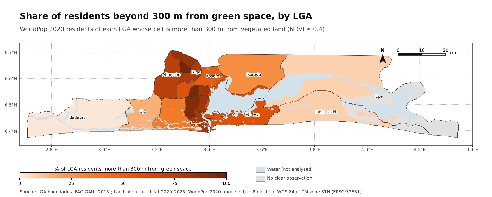
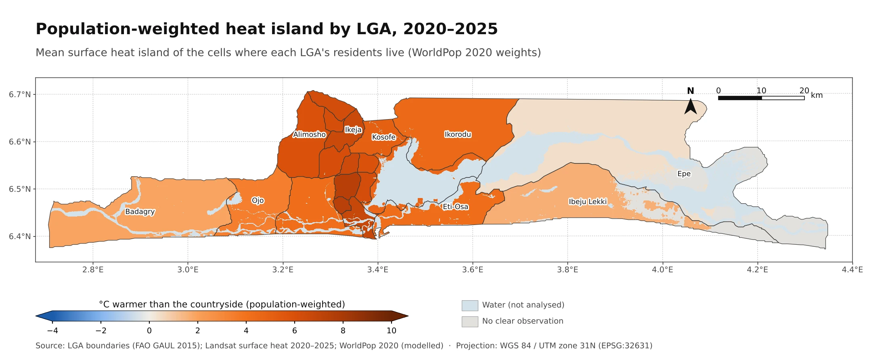
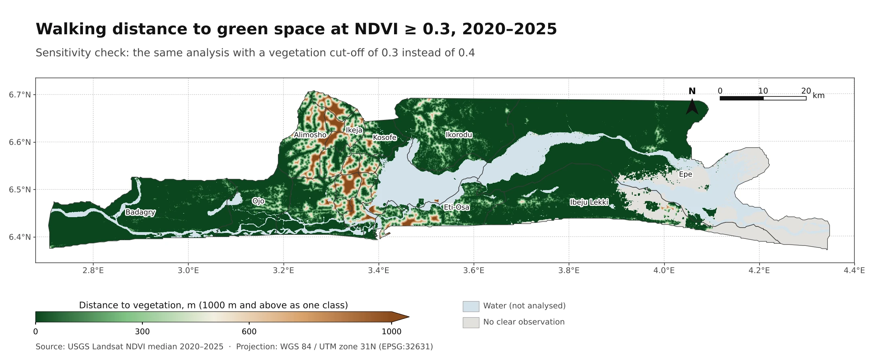
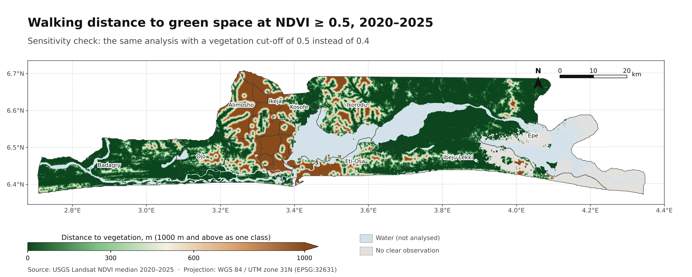
5Discussion
The heat island in Lagos is a mainland phenomenon: the built-up west of the lagoon is several degrees warmer than the countryside, and most residents live on that ground. Vegetation goes with cooler ground, though it cannot be separated from the absence of buildings in the same places. Over 2000–2025 the clear images are too few, and the satellites too different, to show a change in the inner city; the maps point to warming on the growing edges of the city, Ikorodu above all, but no single LGA's rise is conclusive. Starting the record in 1985 instead, as an earlier version of this page did, gives a clear rise, but that result rests on two passes from 1985 and 1991.
6Limitations
- Ground temperature on clear mornings, not air temperature, and not at night.
- Clear images are rare, and the eastern end of Epe has no clear pass in any period.
- Each period is a different satellite. The Landsat 7 to Landsat 8 difference measured here is not resolved, so sensor differences are not removed from the change.
- The change estimate covers only the — inner LGAs seen clearly in every period, —% of the land.
- Land cover (—% accurate for Africa) and population (modelled) carry their own errors. Land surface temperature has not been checked against ground measurements.
- The results are associations, not causes.
7Conclusion
Most of Lagos's built-up mainland is more than 4 °C warmer than the countryside on clear dry-season mornings, and that is where most people live. Between 2000 and 2025 the clear satellite images do not show a change in the inner city that can be told apart from chance; the edges of the city, Ikorodu above all, are where the heat island may have grown. More overlapping Landsat 7 and 8 passes, and air-temperature records from weather stations, would be the next checks.
 Interactive explorer
Explore every LGA
Switch map layers, play the heat island through the three periods, open any LGA, and compare two side by side.
Open the explorer →
Interactive explorer
Explore every LGA
Switch map layers, play the heat island through the three periods, open any LGA, and compare two side by side.
Open the explorer →
Data, code and citation
- lagos_uhi_processed.geojsonLGA boundaries and 2022–2024 values
- change_summary_2000_2025.jsonHeat island 2000–2025, three periods
- lagos_change_scenes.csvEvery satellite pass, used or rejected
- RepositoryEarth Engine export, analysis scripts and tests
How to cite
Oloyede, D. O. (2026). Surface Urban Heat Island in Lagos State, Nigeria: Spatial Pattern, Population Exposure and Change from Landsat, 2000–2025. https://github.com/oloyededavid/Lagos-Urban-Heat-Analytics
A note from me
I set out to answer a simple question: is Lagos getting hotter? I assumed the satellites would just tell me. Mostly, they told me it was cloudy. Of — dry-season passes from 2000 to 2025, the strict per-LGA record kept —, none at all in 2021, 2022 or 2023. Accepting partly clear scenes for the maps raised that to —.
If you know one of these LGAs and something here does not match what you feel on the street, tell me: open an issue on the repository.
David
Was this research useful?
References
- Benjamini, Y., & Hochberg, Y. (1995). Controlling the false discovery rate: a practical and powerful approach to multiple testing. Journal of the Royal Statistical Society: Series B, 57(1), 289–300. doi:10.1111/j.2517-6161.1995.tb02031.x
- Getis, A., & Ord, J. K. (1992). The analysis of spatial association by use of distance statistics. Geographical Analysis, 24(3), 189–206. doi:10.1111/j.1538-4632.1992.tb00261.x
- Gorelick, N., Hancher, M., Dixon, M., Ilyushchenko, S., Thau, D., & Moore, R. (2017). Google Earth Engine: planetary-scale geospatial analysis for everyone. Remote Sensing of Environment, 202, 18–27. doi:10.1016/j.rse.2017.06.031
- Guo, L., Di, L., Zhang, C., Lin, L., Chen, F., & Molla, A. (2022). Evaluating contributions of urbanization and global climate change to urban land surface temperature change: a case study in Lagos, Nigeria. Scientific Reports, 12, 14168. doi:10.1038/s41598-022-18193-w
- Moran, P. A. P. (1950). Notes on continuous stochastic phenomena. Biometrika, 37(1–2), 17–23. doi:10.1093/biomet/37.1-2.17
- Obiefuna, J. N., Okolie, C. J., Nwilo, P. C., Daramola, O. E., & Isiofia, L. C. (2021). Potential influence of urban sprawl and changing land surface temperature on outdoor thermal comfort in Lagos State, Nigeria. Quaestiones Geographicae, 40(1), 5–23. doi:10.2478/quageo-2021-0001
- Oke, T. R. (1982). The energetic basis of the urban heat island. Quarterly Journal of the Royal Meteorological Society, 108(455), 1–24. doi:10.1002/qj.49710845502
- Voogt, J. A., & Oke, T. R. (2003). Thermal remote sensing of urban climates. Remote Sensing of Environment, 86(3), 370–384. doi:10.1016/S0034-4257(03)00079-8
- Zanaga, D., Van De Kerchove, R., Daems, D., De Keersmaecker, W., Brockmann, C., Kirches, G., Wevers, J., Cartus, O., Santoro, M., Fritz, S., Lesiv, M., Herold, M., Tsendbazar, N.-E., Xu, P., Ramoino, F., & Arinò, O. (2022). ESA WorldCover 10 m 2021 v200. Zenodo. doi:10.5281/zenodo.7254221